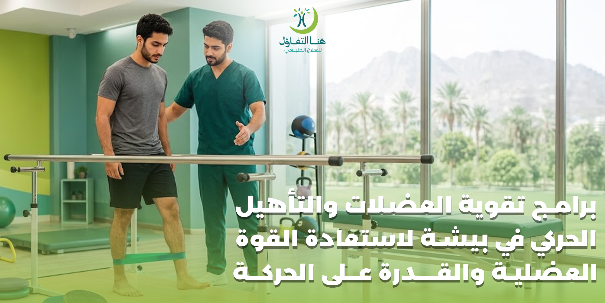

تؤثر قوة العضلات بشكل مباشر في قدرة الإنسان على الحركة وأداء الأنشطة اليومية، بداية من المشي وصعود الدرج وحتى حمل الأشياء وممارسة الرياضة. وعندما تضعف العضلات بسبب إصابة أو عملية جراحية أو قلة الحركة أو بعض الحالات الصحية، قد تصبح المهام اليومية أكثر صعوبة ويحتاج الشخص إلى برنامج تدريجي يساعده على استعادة قوته وقدرته الحركية.
وهنا يأتي دور برامج تقوية العضلات والتأهيل الحركي التي تعتمد على تمارين موجهة يتم اختيارها وفق حالة الشخص ومستوى قوته وحركته وأهدافه التأهيلية.
فالعلاج الطبيعي لا يقتصر على تخفيف الألم، بل يمكن أن يتضمن تمارين لتحسين الحركة وتقوية العضلات واستعادة القدرة الوظيفية والتوازن والتحمل.
وفي مركز هنا التفاؤل للعلاج الطبيعي والتأهيل الطبي في بيشة يمكن تصميم برنامج تأهيلي وفق التقييم الشامل للحالة، بهدف العمل على استعادة القوة العضلية والقدرة على الحركة والقيام بالأنشطة اليومية بصورة أفضل.
ما المقصود ببرامج تقوية العضلات والتأهيل الحركي؟
هي برامج علاجية وتأهيلية تعتمد على مجموعة من التمارين والحركات التي يتم اختيارها بناءً على احتياجات كل حالة.
وقد تركز الخطة على:
- زيادة القوة العضلية.
- تحسين مدى حركة المفاصل.
- تطوير التوازن.
- تحسين القدرة على المشي.
- زيادة التحمل البدني.
- استعادة الوظائف التي تأثرت بعد الإصابة.
- تحسين القدرة على أداء الأنشطة اليومية.
- الاستعداد للعودة إلى الرياضة.
- تقليل تأثير ضعف العضلات على الحركة.
ولا يعني برنامج تقوية العضلات بالضرورة استخدام أوزان ثقيلة أو ممارسة تمارين شاقة؛ فقد يبدأ البرنامج بحركات بسيطة جدًا أو باستخدام وزن الجسم أو مقاومات خفيفة، ثم تزداد صعوبة التمارين تدريجيًا حسب قدرة الشخص.
وتشير NHS إلى أن تمارين تقوية العضلات يمكن أن تعتمد على وزن الجسم أو مقاومات مختلفة مثل الأشرطة المطاطية والأوزان، مع أهمية البدء تدريجيًا وزيادة الحمل مع الوقت.
لماذا تحتاج العضلات إلى التأهيل بعد الإصابة؟
بعد بعض الإصابات قد يقل استخدام الطرف المصاب لفترة، سواء بسبب الألم أو التورم أو الخوف من الحركة أو توصية طبية بتقليل النشاط.
ومع انخفاض الحركة قد تتراجع القوة العضلية والمرونة والقدرة على التحمل.
لذلك، بعد تجاوز المرحلة المناسبة من الإصابة، قد يحتاج الشخص إلى العودة للحركة والتدريب بصورة تدريجية.
وتوضح NHS أن العلاج الطبيعي يمكن أن يساعد في تحسين الحركة والقوة والقدرة على التحمل بعد الإصابات والعمليات الجراحية، ويستخدم التمارين ضمن وسائل العلاج والتأهيل.
أهم الحالات التي قد تستفيد من برامج تقوية العضلات
تختلف الحاجة إلى التأهيل من شخص لآخر، لكن برامج تقوية العضلات والتأهيل الحركي قد تدخل ضمن خطط التعامل مع العديد من الحالات، مثل:
بعد الكسور
بعد التئام الكسر ووفق توجيهات الطبيب، قد يحتاج الشخص إلى استعادة قوة العضلات والحركة التي انخفضت أثناء فترة التثبيت أو قلة النشاط.
بعد العمليات الجراحية
قد يكون التأهيل جزءًا من مرحلة استعادة الحركة والقوة بعد بعض العمليات، وفق نوع العملية وتعليمات الطبيب.
بعد إصابات الملاعب
يحتاج الرياضي إلى استعادة القوة والتوازن والقدرة الوظيفية قبل العودة الكاملة إلى النشاط الرياضي.
ضعف العضلات
قد يستفيد الشخص الذي يعاني من ضعف عضلي من برنامج تدريجي يركز على العضلات المتأثرة والوظائف التي يحتاج إليها.
مشكلات الحركة والمشي
يمكن أن يتضمن التأهيل تمارين للقوة والتوازن والتنسيق بهدف تحسين القدرة على الحركة.
كبار السن
تساعد برامج القوة والتوازن على الحفاظ على القدرة الوظيفية والاستقلالية، كما يمكن أن يكون تدريب التوازن مهمًا لتقليل خطر السقوط.
بعد فترات طويلة من قلة الحركة
قد يفقد الشخص جزءًا من قوته وقدرته على التحمل بعد فترة طويلة من الخمول، ويحتاج إلى العودة للنشاط بشكل تدريجي.
أهمية تقوية العضلات للحركة اليومية
قد لا يشعر الشخص بأهمية القوة العضلية عندما تكون الحركة طبيعية، لكن العضلات تعمل باستمرار لدعم الجسم وتنفيذ الحركات اليومية.
فالمشي، وصعود الدرج، والجلوس والوقوف، وحمل الأشياء، والمحافظة على التوازن، كلها تحتاج إلى مشاركة مجموعات عضلية مختلفة.
ولهذا فإن تقوية العضلات لا ترتبط فقط بالرياضة أو بناء الكتلة العضلية، بل ترتبط أيضًا بالقدرة الوظيفية.
وتشير إرشادات NHS إلى أن تمارين تقوية العضلات تساعد على أداء المهام اليومية والحفاظ على القوة والقدرة الوظيفية، كما يمكن أن تدعم التوازن وتقلل خطر السقوط.
كيف يتم تحديد برنامج تقوية العضلات؟
لا يُفترض أن يحصل جميع المرضى على البرنامج نفسه.
فالتمرين المناسب لشخص رياضي قد لا يكون مناسبًا لشخص كبير في السن، كما أن شخصًا يتعافى من عملية جراحية يحتاج إلى برنامج مختلف عن شخص يعاني من ضعف عضلي بسبب قلة الحركة.
لذلك يبدأ التأهيل عادةً بتقييم مجموعة من العناصر، مثل:
- القوة العضلية.
- مدى حركة المفاصل.
- القدرة على المشي.
- التوازن.
- الألم.
- القدرة على تحمل النشاط.
- الحركة الوظيفية.
- طبيعة الإصابة أو الحالة.
- العمر.
- مستوى النشاط السابق.
- الهدف من التأهيل.
وتوضح NHS أن تقييم العلاج الطبيعي قد يتضمن مراجعة الأعراض والتاريخ الصحي ونمط الحياة، إلى جانب فحص القوة والتوازن والحركة لتحديد خيارات العلاج المناسبة.
مراحل برنامج تقوية العضلات والتأهيل الحركي
يمكن أن يمر التأهيل بعدة مراحل، لكن ترتيبها ومدة كل مرحلة يختلفان حسب الحالة.
المرحلة الأولى: التقييم
يتم تحديد نقاط الضعف والقيود الحركية والوظائف التي تحتاج إلى تحسين. والهدف هو معرفة ما الذي يستطيع الشخص القيام به الآن؟ وما الذي يحتاج إلى تطوير؟
المرحلة الثانية: استعادة الحركة
قبل زيادة قوة العضلات، قد يكون من الضروري تحسين حركة المفصل أو الطرف إذا كانت هناك محدودية واضحة. وقد تشمل هذه المرحلة تمارين الحركة والمرونة المناسبة للحالة.
المرحلة الثالثة: تنشيط وتقوية العضلات
تبدأ تمارين القوة بمستوى يتناسب مع قدرة الشخص. وقد تعتمد على: وزن الجسم، مقاومات خفيفة، الأربطة المطاطية، أوزان بسيطة، أجهزة التمارين، تمارين وظيفية. ثم يمكن زيادة المقاومة تدريجيًا مع تحسن القدرة.
وتشير NHS إلى أهمية البدء تدريجيًا وبناء مستوى التمرين على مدى أسابيع بدل رفع شدة النشاط بشكل مفاجئ.
المرحلة الرابعة: تطوير التوازن والتحكم
لا تكفي القوة وحدها لأداء الحركة بكفاءة. فالشخص يحتاج أيضًا إلى القدرة على التحكم في جسمه أثناء الحركة. لذلك قد تدخل تمارين: الوقوف، نقل الوزن، التوازن، التحكم في الطرف المصاب، الحركة في اتجاهات مختلفة.
المرحلة الخامسة: التدريب الوظيفي
هنا يتم الانتقال من التمرين المجرد إلى الحركات التي يحتاج إليها الشخص في حياته اليومية. مثل: الجلوس والوقوف، صعود الدرج، المشي، حمل الأشياء، الانحناء، تغيير الاتجاه، استخدام الطرف المصاب في الأنشطة اليومية.
المرحلة السادسة: العودة للنشاط
بالنسبة للرياضيين أو الأشخاص الذين لديهم مستوى نشاط مرتفع، قد يتم الانتقال تدريجيًا إلى تمارين أكثر تخصصًا تحاكي متطلبات الرياضة أو العمل.
تمارين تقوية العضلات المستخدمة في التأهيل
تختلف التمارين حسب المنطقة المستهدفة والحالة، لكن برامج التأهيل قد تستخدم أنواعًا متعددة من تمارين القوة.
تمارين وزن الجسم
مثل بعض أشكال: الجلوس والوقوف، القرفصاء المعدلة، تمارين الارتكاز، تمارين رفع الجسم. ويتم اختيار التمرين وتحديد صعوبته وفق قدرة الشخص.
تمارين المقاومة
يمكن استخدام: الأربطة المطاطية، الأوزان، أجهزة المقاومة، مقاومة وزن الجسم. وتسمح المقاومة بزيادة الحمل على العضلات بصورة تدريجية.
تمارين القوة الوظيفية
وهي التمارين التي تشبه الحركات المطلوبة في الحياة اليومية أو الرياضة. فعلى سبيل المثال، قد يتم تدريب الشخص على الجلوس والوقوف بطريقة صحيحة إذا كان هدف التأهيل تحسين القدرة على أداء هذه الحركة.
تمارين تقوية عضلات الساقين
تُعد عضلات الساقين من أهم مجموعات العضلات التي تدخل في المشي والتوازن وصعود الدرج.
وقد تشمل برامج التأهيل تدريبات تستهدف:
- عضلات الفخذ.
- عضلات خلف الفخذ.
- عضلات الساق.
- عضلات الورك.
- عضلات القدم والكاحل.
وتختلف التمارين حسب المشكلة؛ فقد تكون بعض الحالات بحاجة إلى تقوية محددة لعضلة معينة بدل تدريب الطرف بالكامل.
تقوية عضلات الظهر والجذع
تساعد عضلات الجذع والظهر في دعم الجسم والمحافظة على التحكم أثناء الحركة.
وقد تستخدم برامج التأهيل تمارين تستهدف:
- • عضلات البطن.
- • عضلات الظهر.
- • عضلات الحوض.
- • عضلات الورك.
والهدف ليس مجرد زيادة القوة، بل تحسين التحكم أثناء أداء الحركات اليومية والوظيفية.
تقوية عضلات الكتف والذراع
قد يحتاج الشخص إلى برنامج خاص لتقوية الطرف العلوي بعد بعض الإصابات أو العمليات أو فترات قلة الاستخدام.
وقد يشمل التدريب تدريجيًا:
- عضلات الكتف.
- عضلات الذراع.
- عضلات الساعد.
- عضلات اليد.
ويتم اختيار التمرينات وفق سبب الضعف ومدى الحركة والألم الموجود.
التأهيل الحركي لتحسين المشي
المشي يحتاج إلى أكثر من قوة عضلات الساق.
فهو يعتمد على مجموعة من العناصر، منها:
- • القوة.
- • التوازن.
- • مدى الحركة.
- • التحكم العصبي العضلي.
- • التنسيق.
- • القدرة على نقل الوزن.
- • الثبات.
لذلك قد يجمع برنامج التأهيل بين تمارين القوة والتوازن والتدريب على المشي.
وهذا مهم بشكل خاص للأشخاص الذين تعرضوا لإصابات أو عمليات أو حالات أثرت على قدرتهم على المشي.
برامج التأهيل الحركي بعد العمليات
بعد بعض العمليات الجراحية، قد تنخفض القوة والحركة مؤقتًا نتيجة الألم أو قلة الاستخدام أو القيود المفروضة خلال فترة التعافي.
ويُحدد برنامج التأهيل وفق نوع العملية وتوجيهات الطبيب.
وقد يهدف إلى:
- استعادة الحركة.
- تقوية العضلات.
- تحسين التوازن.
- زيادة القدرة على تحمل النشاط.
- العودة للأنشطة اليومية.
وتشير NHS إلى أن العلاج الطبيعي يستخدم كثيرًا للمساعدة في تحسين الحركة والقوة والقدرة على التحمل بعد العمليات الجراحية.
برامج تقوية العضلات بعد الكسور
بعد بعض الكسور، خصوصًا التي تتطلب التثبيت لفترة، قد تضعف العضلات المحيطة بالمنطقة المصابة.
وبعد السماح بالحركة والتحميل، يمكن أن يبدأ التأهيل تدريجيًا بهدف استعادة:
تنبيه:
ويجب أن يتوافق مستوى التمرين والتحميل مع مرحلة التئام الكسر وتعليمات الطبيب.
برامج التأهيل الرياضي وتقوية العضلات
الرياضي لا يحتاج فقط إلى التخلص من الألم حتى يعود للملعب.
بل يحتاج إلى استعادة القدرات التي تتطلبها رياضته.
القوة
لتطوير قدرة العضلات على تحمل الحمل.
التوازن
لتحسين التحكم أثناء الحركة.
المرونة
للحفاظ على مدى الحركة المطلوب.
التحمل
للتعامل مع مدة النشاط الرياضي.
السرعة والتغيير في الاتجاه
عند الوصول إلى المرحلة المناسبة.
التدريب الخاص بالرياضة
بحيث تصبح التمارين أقرب إلى الحركات المطلوبة في النشاط الرياضي.
تقوية العضلات لكبار السن
مع التقدم في العمر قد تنخفض الكتلة والقوة العضلية إذا انخفض النشاط البدني.
ولهذا يمكن أن تكون تمارين القوة والتوازن جزءًا مهمًا من الحفاظ على الاستقلالية والقدرة على الحركة.
وتشير AAOS إلى أن التمارين تساعد كبار السن على الحفاظ على المشي والتوازن والقوة والمرونة، كما يمكن أن تساعد على تقليل خطر السقوط.
ويجب تصميم البرنامج بما يتناسب مع القدرة البدنية والحالة الصحية للشخص.
هل تمارين القوة مناسبة للجميع؟
تمارين القوة مفيدة لكثير من الأشخاص، لكن التمرين نفسه ليس مناسبًا للجميع.
فوجود:
- إصابة حديثة.
- ألم شديد.
- عملية جراحية حديثة.
- كسر.
- مشكلة في المفصل.
- ضعف شديد.
- حالة عصبية.
- مشكلة صحية مزمنة.
قد يتطلب تعديل البرنامج أو الحصول على تقييم طبي قبل بدء التمرين.
كما أن AAOS توصي بأن تكون برامج التكييف والتمارين مصممة بشكل آمن وتحت إشراف الطبيب أو أخصائي العلاج الطبيعي عندما تكون هناك حالة إصابة أو تأهيل.
هل تقوية العضلات تعني رفع أوزان ثقيلة؟
لا.
يمكن تحقيق تقوية العضلات باستخدام مستويات مختلفة من المقاومة.
وقد يبدأ الشخص بتمارين بسيطة تعتمد على وزن الجسم، ثم ينتقل إلى الأربطة المطاطية أو أوزان خفيفة، ثم تزيد المقاومة تدريجيًا حسب الهدف والقدرة.
وتذكر NHS أن تمارين القوة يمكن أن تعتمد على وزن الجسم أو الأوزان أو الأشرطة المطاطية وغيرها من أشكال المقاومة.
أهمية التدرج في برامج تقوية العضلات
من أهم مبادئ التأهيل التدرج.
فرفع شدة التمارين بسرعة قد يؤدي إلى إجهاد العضلات أو زيادة الأعراض لدى بعض الحالات.
ويتم الانتقال من مستوى إلى آخر وفق استجابة الجسم.
هل يجب أن أشعر بالألم أثناء التمرين؟
ليس الهدف من تمارين التأهيل أن يتحمل الشخص ألمًا شديدًا حتى تتحسن العضلات.
وقد يكون هناك مجهود أو إجهاد عضلي طبيعي أثناء بعض التمارين، لكن ظهور ألم واضح أو متزايد أثناء تمرين معين يستدعي إيقافه ومراجعة المختص لتقييم ملاءمته.
تنبيه:
وتوضح برامج AAOS الخاصة بالتكييف أن التمرين لا يفترض أن يسبب ألمًا، مع أهمية التواصل مع الطبيب أو أخصائي العلاج الطبيعي عند ظهور الألم أثناء التمرين.
دور المرونة إلى جانب تقوية العضلات
القوة والمرونة ليستا منفصلتين تمامًا.
فقد تكون العضلة قوية لكن الحركة محدودة، أو تكون الحركة جيدة لكن القوة غير كافية.
ولهذا قد تجمع برامج التأهيل بين:
- • تمارين القوة.
- • تمارين المرونة.
- • تمارين الحركة.
- • تمارين التوازن.
- • التدريب الوظيفي.
وتشير NHS إلى أن تمارين المرونة تساعد على الحفاظ على الحركة المطلوبة للمهام اليومية والنشاط البدني.
دور التوازن في التأهيل الحركي
التوازن عنصر مهم في الحركة، خصوصًا لدى كبار السن أو الأشخاص الذين تعرضوا لإصابات في الأطراف السفلية.
وقد تتضمن برامج التأهيل تمارين تساعد على:
- الوقوف بثبات.
- التحكم في نقل الوزن.
- الوقوف على قدم واحدة.
- تحسين التنسيق.
- التحكم في الحركة أثناء المشي.
وتوصي إرشادات النشاط البدني لكبار السن بإدخال الأنشطة التي تساعد على القوة والتوازن والتنسيق ضمن النشاط البدني.
التأهيل الحركي بعد فترات الخمول
قلة الحركة لفترات طويلة قد تؤثر على:
- القوة.
- التحمل.
- المرونة.
- التوازن.
- القدرة على أداء الأنشطة اليومية.
ولهذا تكون العودة للنشاط بعد فترة طويلة من الخمول أفضل عندما تتم بصورة تدريجية.
وقد يبدأ البرنامج بحركات بسيطة ثم يزداد تدريجيًا حسب قدرة الشخص.
برامج تقوية العضلات حسب العمر
للأطفال
تُختار التمارين بطريقة تناسب عمر الطفل وقدراته وطبيعة الحالة، مع التركيز على الحركة والوظائف المناسبة للمرحلة العمرية.
للبالغين
يمكن أن تركز البرامج على استعادة القوة بعد الإصابة أو العملية، أو تحسين القدرة الوظيفية والرياضية.
لكبار السن
يكون التركيز غالبًا على القوة والتوازن والمشي والاستقلالية الوظيفية، مع مراعاة الحالة الصحية.
فوائد برامج تقوية العضلات والتأهيل الحركي
يمكن أن تستهدف برامج التأهيل مجموعة من الأهداف، منها:
- • تحسين القوة العضلية.
- • تحسين القدرة على الحركة.
- • دعم التوازن.
- • تحسين المشي.
- • زيادة القدرة على تحمل النشاط.
- • استعادة الوظائف بعد الإصابة.
- • تحسين الحركة بعد العمليات عند ملاءمة الحالة.
- • دعم العودة إلى الرياضة.
- • تحسين القدرة على أداء المهام اليومية.
- • الحفاظ على الاستقلالية الحركية.
وتشير الأدلة الإرشادية إلى أن تمارين تقوية العضلات والنشاط البدني المنتظم يرتبطان بتحسين القوة والقدرة الوظيفية والتوازن لدى فئات مختلفة.
أخطاء شائعة عند ممارسة تمارين تقوية العضلات
البدء بمقاومة عالية
قد يعتقد الشخص أن المقاومة الأكبر تعني نتائج أسرع، لكن التأهيل يعتمد على التدرج.
تقليد تمارين الآخرين
التمرين الذي يناسب شخصًا آخر قد لا يناسب إصابتك أو مستوى قوتك.
تجاهل الألم
ظهور ألم واضح أو متزايد أثناء التمرين يحتاج إلى إعادة تقييم.
التركيز على عضلة واحدة فقط
قد تكون المشكلة مرتبطة بمجموعة عضلية أو بالحركة والتوازن وليس عضلة واحدة.
إهمال التوازن والمرونة
القوة وحدها ليست كل عناصر الحركة.
عدم الانتظام
البرنامج يحتاج إلى التزام واستمرارية لتحقيق الاستفادة المستهدفة.
أهمية الالتزام بالتمارين المنزلية
قد يعطي أخصائي العلاج الطبيعي مجموعة من التمارين التي يمكن تنفيذها في المنزل بين الجلسات.
والالتزام بهذه التمارين جزء مهم من عملية التأهيل، لأنها تساعد على استمرار التدريب خارج جلسة العلاج.
وتوضح NHS أن المريض قد يحصل على تمارين منزلية بعد جلسة العلاج الطبيعي، وأن تنفيذها بانتظام مهم للمساعدة في التعافي.
كم تستغرق برامج تقوية العضلات والتأهيل الحركي؟
لا توجد مدة واحدة لجميع الحالات.
فمدة البرنامج تعتمد على:
- سبب ضعف العضلات.
- شدة الإصابة.
- العمر.
- مستوى النشاط.
- وجود أمراض أو إصابات أخرى.
- مدى الالتزام بالتمارين.
- الاستجابة للتأهيل.
- الهدف النهائي من البرنامج.
فبرنامج شخص يريد استعادة المشي بعد إصابة قد يختلف تمامًا عن برنامج رياضي يريد العودة إلى المنافسات.
متى تظهر نتائج تقوية العضلات؟
تختلف سرعة التحسن من شخص لآخر.
وقد يلاحظ الشخص في البداية تحسنًا في التحكم بالحركة أو القدرة على أداء التمرين، ثم تظهر زيادة القوة والتحمل تدريجيًا مع الاستمرار.
ولا يُفضل الحكم على البرنامج بعد جلسة أو جلستين فقط؛ فالتأهيل عملية تدريجية تعتمد على الانتظام والتدرج المناسب.
برامج التأهيل الحركي في مركز هنا التفاؤل ببيشة
في مركز هنا التفاؤل للعلاج الطبيعي والتأهيل الطبي يمكن تصميم برنامج تأهيلي يتناسب مع احتياجات الحالة، مع التركيز على الوصول إلى أهداف وظيفية واضحة.
ويتم تحديد التمارين وشدتها وعددها وفق تقييم الحالة، بدل استخدام برنامج واحد لجميع المرضى.
لماذا التقييم مهم قبل بدء برنامج تقوية العضلات؟
لأن معرفة أن الشخص يعاني من "ضعف عضلات" لا تكفي وحدها.
فقد يكون الضعف مرتبطًا بـ:
- إصابة.
- قلة حركة.
- ألم.
- عملية جراحية.
- مشكلة في المفصل.
- اضطراب في التوازن.
- مشكلة عصبية.
- ضعف عام.
وبالتالي فإن تحديد السبب يساعد على اختيار نوع التأهيل المناسب.
أسئلة شائعة عن برامج تقوية العضلات والتأهيل الحركي
ما هي برامج تقوية العضلات؟
هي برامج تعتمد على تمارين مقاومة وحركة يتم اختيارها وفق حالة الشخص بهدف تحسين القوة العضلية والقدرة الوظيفية والحركة.
هل برامج تقوية العضلات هي نفسها تمارين الجيم؟
ليس بالضرورة. برامج التأهيل يتم تصميمها وفق حالة الشخص وهدفه، وقد تبدأ بتمارين بسيطة ومقاومة خفيفة قبل الانتقال إلى مستويات أعلى.
هل العلاج الطبيعي يساعد على تقوية العضلات؟
نعم، يمكن أن يتضمن العلاج الطبيعي تمارين مخصصة لتحسين القوة والحركة والتوازن والقدرة على التحمل.
هل يمكن تقوية العضلات بعد العملية؟
يمكن أن يكون تقوية العضلات جزءًا من التأهيل بعد بعض العمليات، لكن نوع التمارين وموعد البدء بها يعتمد على نوع العملية وتعليمات الطبيب وحالة المريض.
هل يمكن تقوية العضلات بعد الكسر؟
بعد السماح بالحركة والتحميل، قد يتضمن التأهيل تمارين لاستعادة القوة والحركة والقدرة الوظيفية، مع مراعاة مرحلة التئام الكسر.
هل تمارين المقاومة مناسبة لكبار السن؟
يمكن أن تكون تمارين القوة جزءًا مهمًا من النشاط البدني لكبار السن، مع اختيار مستوى مناسب لقدرات الشخص وحالته الصحية.
هل تقوية العضلات تساعد على تحسين التوازن؟
يمكن أن تساعد تمارين القوة، إلى جانب تدريبات التوازن والتنسيق، على تحسين القدرة الحركية والتوازن، خاصة عند كبار السن.
هل أستطيع ممارسة تمارين تقوية العضلات إذا كنت أشعر بالألم؟
يعتمد ذلك على سبب الألم وشدته. لا ينبغي تجاهل الألم الواضح أو المتزايد أثناء التمرين، ويُفضل تقييم الحالة وتعديل التمرين عند الحاجة.
هل يجب أن أستخدم الأوزان لتقوية العضلات؟
لا. يمكن استخدام وزن الجسم أو الأربطة المطاطية أو أنواع مختلفة من المقاومة، ثم زيادة مستوى المقاومة تدريجيًا حسب الهدف والقدرة.
كم مرة أحتاج إلى ممارسة تمارين القوة؟
توصي الإرشادات العامة للبالغين بممارسة أنشطة تقوية العضلات التي تستهدف المجموعات العضلية الرئيسية يومين على الأقل أسبوعيًا، لكن برنامج التأهيل العلاجي قد يختلف حسب الحالة.
هل برامج التأهيل مناسبة للرياضيين؟
نعم، يمكن تصميم برامج تأهيل رياضي تركز على القوة والتوازن والقدرة الوظيفية والعودة التدريجية للحركات الخاصة بالرياضة.
هل يمكن عمل تمارين التأهيل في المنزل؟
قد يعطي أخصائي العلاج الطبيعي تمارين منزلية مناسبة للحالة، لكن اختيار التمارين وشدتها يجب أن يكون متوافقًا مع حالة الشخص وأهداف البرنامج.
هل برنامج تقوية العضلات مناسب للأطفال؟
يمكن استخدام برامج علاجية وحركية للأطفال عند الحاجة، لكن يجب أن يتم اختيار التمارين وفق عمر الطفل وحالته وقدراته وتحت إشراف متخصص.
هل ضعف العضلات يحتاج دائمًا إلى علاج طبيعي؟
ليس بالضرورة؛ السبب هو العامل الأهم. إذا كان الضعف مستمرًا أو يؤثر على المشي والحركة والأنشطة اليومية، فقد يكون التقييم المتخصص مفيدًا لتحديد السبب والاحتياج التأهيلي.
احجز برنامج تقوية العضلات والتأهيل الحركي في بيشة
إذا كنت تعاني من ضعف في العضلات بعد إصابة أو عملية، أو تواجه صعوبة في الحركة والمشي، أو تحتاج إلى استعادة قوتك وقدرتك على أداء الأنشطة اليومية والرياضية، فقد يكون التأهيل الحركي وبرنامج تقوية العضلات المخصص خطوة مهمة ضمن رحلة التعافي.